# AFM#2 — ANNUAL MUSICAL FINALE 2026
THE PARTICIPANT'S GUIDE & COMPANION
A Step-by-Step Practical Handbook for Listening, Adjudication, and Tournament Mastery
Official Participant Edition • Season 2026 • Midnight Muse Architecture
WELCOME TO THE ANNUAL MUSICAL FINALE
Welcome to AFM#2 (Annual Musical Finale 2026). You have been selected and invited to participate as an official adjudicator in a dedicated musical sanctuary designed to celebrate, evaluate, and crown the definitive songs of our year.
In an era of disposable algorithmic streams and thirty-second viral snippets, AFM#2 returns music to a place of reverence, deep attention, and deliberate critical admiration. Within this sanctuary, your collection is not merely background sound; it is an active tournament field. Every track possesses an artistic identity, every listen is an opportunity for discovery, and every score contributes to an enduring, immutable historical record of songwriting excellence.
This handbook is your comprehensive, step-by-step instructional companion. Whether you consider yourself an audiophile, a seasoned playlist curator, or simply someone who loves great songwriting and vocal artistry, this guide will allow you to independently set up your account, manage your music library, audition contenders across five timeless criteria, and steer the competition through seven elimination stages to crown the 2026 Champion.
If you are eager to begin listening immediately, follow this five-minute orientation:
1. Accept Your Invitation: Click the unique invitation link provided by the competition organizer, choose your username and password, and complete your registration.
2. Explore Your Journal: You will land on your Journal dashboard. Review the Listening Inspiration banner and inspect the featured track on the animated On the Turntable showcase.
3. Listen to a Contender: Navigate to Shortlist in the top navigation bar. Click Play in AFM#2 on any contender to initiate playback in the embedded player, and click Lyrics to follow along with synchronized poetry.
4. Score the Five Criteria: Click Scorecard on the contender card. Evaluate the song across Melody (♫), Lyrics (📝), Vocals (🎤), Emotion (❤️), and Replayability (🔁) using the tactile steppers or numeric inputs (0–10 each).
5. Finalize Your Evaluation: When all five criteria are filled, review your reflections and click the Finalize Scorecard (🔒) button. Your scorecard is locked, and your scores are submitted to the official tournament leaderboard!
- Chapter 1: Welcome to AFM#2
- 1.1 The Vision & Musical Philosophy
- 1.2 What Makes AFM#2 Unique
- 1.3 The Competition Lifecycle at a Glance
- 1.4 Navigation Architecture & Control Bar
- Chapter 2: Accepting an Invitation & Creating Your Account
- 2.1 Understanding Invitation Links
- 2.2 Step-by-Step Registration Procedure
- 2.3 Signing In & Session Persistence
- 2.4 Desktop vs. Mobile Interface Layouts
- 2.5 The Eight Curated Visual Themes
- Chapter 3: Preparing & Importing Your Music Library
- 3.1 The Importance of a Curated Collection
- 3.2 Part A: Exporting Music using TuneMyMusic
- 3.3 Part B: Importing CSV Files into AFM#2
- 3.4 Part C: Fresh Catalogue Setup: Removing Sample Records
- Chapter 4: Managing Songs & Matching Recordings
- 4.1 Library Navigation, Searching & Quick-Filters
- 4.2 Adding Individual Songs to Your Catalogue
- 4.3 Editing Metadata & Single-Record Management
- 4.4 High-Definition Playback & Synced Lyrics
- 4.5 YouTube Recording Discovery & Matching
- Chapter 5: Discovering & Shortlisting Contenders
- 5.1 The Purpose of Discovery Curation
- 5.2 Navigating the Shortlist Stream
- 5.3 Shortlisting vs. Passing Tracks
- 5.4 Understanding Review Statuses
- Chapter 6: Conducting Formal Auditions
- 6.1 The Audition Arena & Scorecard Structure
- 6.2 The Five Core Evaluation Criteria
- 6.3 Three Tactile Scoring Modalities
- 6.4 Personal Reflections & Listening Notes
- 6.5 Incomplete vs. Complete Scorecards
- 6.6 Scorecard Finalization & The Permanent Lock Safeguard
- Chapter 7: Managing Tournament Progression
- 7.1 The Seven Tournament Stages Ladder
- 7.2 Scoring, Finalizing, and Advancing: Crucial Distinctions
- 7.3 Understanding Qualification Cutoffs & Target Quotas
- 7.4 The Qualification Wizard: Step-by-Step
- 7.5 Precision Tie-Breaking Hierarchy
- 7.6 The Grand Finale & Crowning the Champion
- Chapter 8: Exploring Results & The Permanent Archive
- 8.1 The 2026 Championship Podium
- 8.2 Stage-by-Stage Historical Audit Trails
- 8.3 Reviewing Full Multi-Criteria Score Breakdowns
- 8.4 Exporting the Official Tournament Ledger (CSV)
- Chapter 9: Personalizing Your Experience
CHAPTER 1: WELCOME TO AFM#2
1.1 The Vision & Musical Philosophy
At its heart, the Annual Musical Finale is a celebration of songwriting, melodic invention, vocal performance, and emotional impact. Throughout any given year, we encounter hundreds of songs across streaming services, vinyl records, radio broadcasts, and trusted friend recommendations. Most modern platforms treat music as disposable background noise—ephemeral streams packaged to optimize engagement algorithms.
AFM#2 operates on a fundamentally different philosophy:
- Active Listening: Taking dedicated time to sit with a composition, appreciate the bassline, follow the lyrical poetry, absorb vocal nuance, and recognize emotional truth.
- Objective Adjudication: Evaluating tracks across five distinct, structured musical dimensions rather than relying on an ambiguous five-star scale or a fleeting thumbs-up.
- Enduring Legacy: Creating an immutable, season-long tournament ledger that captures the greatest musical achievements of the year with historical permanence.
1.2 What Makes AFM#2 Unique
- Zero Commercial Clutter: No algorithmic recommendations designed to sell subscriptions, no commercial banners, and no sponsored audio clips. The environment is pure, serene, and entirely focused on your collection.
- Atmospheric Elegance: Built upon the signature Midnight Muse design system, AFM#2 offers eight custom aesthetic themes with real-time blur and depth controls that adapt smoothly to bright daytime curation or midnight listening sessions.
- Tactile Adjudication Instruments: Custom numeric steppers, dual precision sliders, collapsible lyric sheets, and responsive touch controls ensure that scoring music feels satisfying and intuitive on every device.
- Anti-Bias Integrity Safeguards: Once you complete and finalize an audition scorecard, it is permanently locked with cryptographic certainty. This safeguard eliminates hindsight bias, ensuring your tournament reflects your genuine, immediate evaluation.
1.3 The Competition Lifecycle at a Glance
The Annual Musical Finale tournament progresses along a clear, structured pipeline through five major phases:
- Music Library: Your central master catalogue of candidate songs, imported from playlists or entered manually.
- Discovery Shortlist: A preliminary screening stream where you pre-listen to tracks and curate contenders deemed worthy of formal competition.
- Formal Auditions: Rigorous multi-dimensional evaluation where shortlisted tracks are scored across five criteria (0–10 each), yielding an aggregate total out of 50.
- Tournament Elimination Rounds: Progressive elimination brackets through seven cutoff rounds (Top 200 down to the Grand Finale).
- Championship Podium: The crowning of the 2026 Gold 🥇, Silver 🥈, and Bronze 🥉 masterworks in the permanent Hall of Fame.
1.4 Navigation Architecture & Control Bar
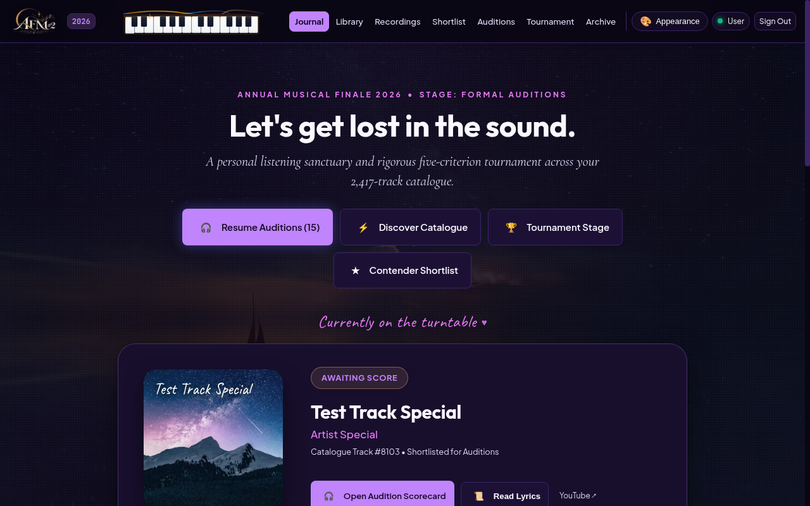
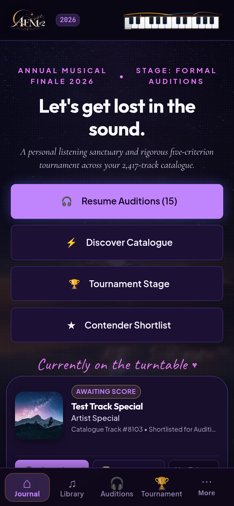
The AFM#2 navigation bar provides immediate access to every core room in the sanctuary:
- Journal: Your central command dashboard featuring the Listening Inspiration banner, real-time season ledger metrics, and the featured On the Turntable showcase.
- Library: Your master song catalogue with multi-column sorting, text search, quick-filter pills, single-song add/edit tools, and CSV bulk import.
- Recordings: Dedicated YouTube audio matching console where imported catalogue tracks are scanned, previewed, and matched to high-definition video sources.
- Shortlist: The discovery curation stream where you listen to candidates and decide which songs advance to formal auditions or get passed.
- Auditions: The adjudication hall where shortlisted contenders are scored across the five criteria and permanently locked.
- Tournament: The live competition arena tracking stage cutoffs, active qualifier brackets, and the guided stage advancement wizard.
- Archive: The permanent Hall of Fame housing historical stage results, full criteria breakdowns, and CSV export capabilities.
- Appearance (🎨): Rapid theme switcher allowing you to select from eight visual palettes and customize atmospheric blur depth.
- Account (User Pill): Profile settings, password management, and biometric WebAuthn passkey registration.
- Sign Out: Securely terminates your current authenticated session.
CHAPTER 2: ACCEPTING AN INVITATION & CREATING YOUR ACCOUNT
2.1 Understanding Invitation Links
Participation in AFM#2 is by invitation only. Participation in AFM#2 is by invitation only.
Your invitation link is provided directly by the AFM#2 organizer. Open the unique link you receive to register for the competition. After registration, visit the official AFM#2 website at https://afm2.infinityfreeapp.com/ to sign in.
2.2 Step-by-Step Registration Procedure
- Purpose: Create your official participant account and establish your competition profile.
- Before you begin: Ensure you have your unique invitation link and an active internet connection.
Procedure:
- Open your unique invitation link in Google Chrome, Safari, Firefox, or Microsoft Edge on your computer, tablet, or phone.
- The registration screen welcomes you: "Welcome to AFM#2! You have been invited to participate in the Annual Musical Finale 2026."
- Enter your desired Username (minimum 3 characters, alphanumeric). This name identifies your scores and reflections across the tournament.
- Enter your Email Address. This is used for session recovery and important tournament notifications.
- Enter a Strong Password (minimum 8 characters; a combination of letters, numbers, and symbols is strongly recommended).
- Confirm your password in the Confirm Password field.
- Click the primary button: Complete Registration & Enter AFM#2.
- Expected Result: Your account is created instantly, you are automatically signed in, and you are welcomed into your personal Journal dashboard.
2.3 Signing In & Session Persistence
- Purpose: Access your AFM#2 sanctuary on return visits across any device.
- Before you begin: Confirm that your account has been registered.
Procedure:
- Navigate to the AFM#2 home page.
- In the top navigation bar, click Sign In.
- Enter your registered Username or Email Address.
- Enter your Password.
- Optional: If you are on a personal, trusted device, check the box: Remember this device for 30 days. This saves an encrypted authentication cookie so you remain signed in between sessions.
- Click Sign In to AFM#2.
- Expected Result: You are authenticated and redirected to your active tournament page.
2.4 Desktop vs. Mobile Interface Layouts
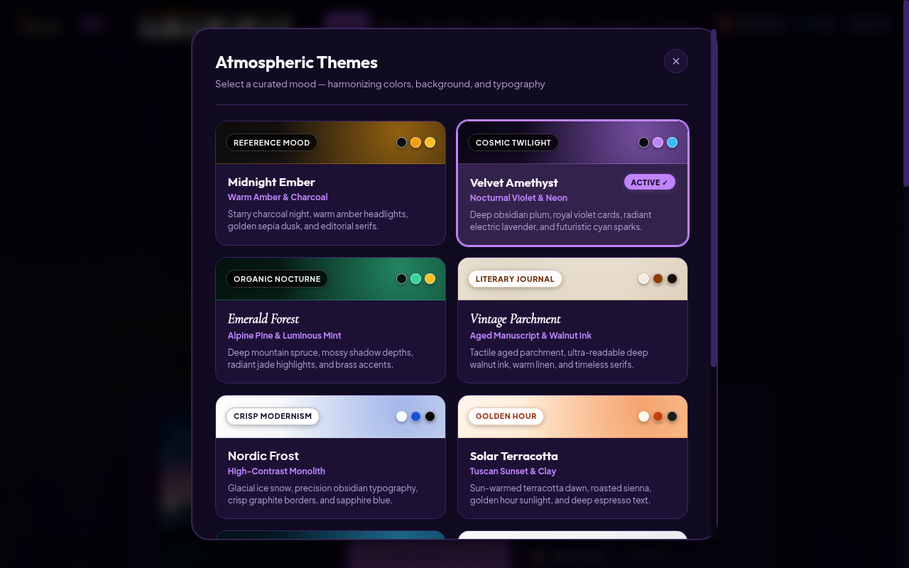
AFM#2 adapts seamlessly across all viewport dimensions:
- Desktop & Widescreen (1024px+): Presents comprehensive data tables, expansive multi-criteria scorecards, side-by-side lyrics preview drawers, and persistent header status instruments.
- Tablet & Compact (768px–1023px): Streamlines tabular columns, stacks secondary metrics, and optimizes tactile touch targets for stylus or finger input.
- Mobile Smartphone (320px–767px): Completely reimagines the interface into comfortable swipeable cards, single-row compact action toolbars, tactile numeric steppers, and a persistent bottom quick-navigation bar.
2.5 The Eight Curated Visual Themes
AFM#2 features eight handcrafted color palettes designed for maximum legibility and mood resonance:
| Theme Name | Primary Mood & Aesthetic | Background & Surface | Accent Color |
|---|---|---|---|
| Midnight Muse (Default) | Deep atmospheric dark velvet | #0b090f / #161320 |
Radiant Amber (#f59e0b) |
| Velvet Night | Ultra-dark minimalist indigo | #07060a / #110e17 |
Soft Lavender (#a78bfa) |
| Solar Flare | Warm golden embers and hearth | #0f0b08 / #1c1510 |
Electric Gold (#fbbf24) |
| Emerald Grove | Calm verdant botanical depths | #060d09 / #0e1a13 |
Vivid Mint (#10b981) |
| Royal Violet | Luxurious majestic purple tone | #0c0614 / #170c24 |
Neon Orchid (#c084fc) |
| Cyberpunk Amber | High-contrast technical neon | #050505 / #121212 |
Laser Amber (#f59e0b) |
| Monolith Slate | Clean architectural graphite | #0d1117 / #161b22 |
Crisp Ice Blue (#38bdf8) |
| Pure Moonlight | High-key clean paper aesthetic | #f8fafc / #ffffff |
Deep Sapphire (#1e40af) |
CHAPTER 3: PREPARING & IMPORTING YOUR MUSIC LIBRARY
3.1 The Importance of a Curated Collection
A championship tournament is only as compelling as the caliber of its contenders. Rather than forcing you to type every song manually, AFM#2 provides an automated, industrial-strength CSV bulk ingestion pipeline capable of loading your favorite streaming playlists into your personal catalogue in seconds.
3.2 Part A: Exporting Music using TuneMyMusic
- Purpose: Extract your playlists or Liked Songs from YouTube Music into an open, universal CSV file for import into AFM#2.
- Before you begin: Ensure you have access to your streaming music account and open a modern web browser.
Step-by-Step Export Procedure:
- In your browser, navigate to the official TuneMyMusic service:
https://www.tunemymusic.com. - On the welcome banner, click the prominent button: Let's Start.
- Select Source: From the grid of streaming services, click YouTube Music.
- Authorize Account: A secure Google sign-in window will open. Authorize TuneMyMusic with read-only access to inspect your library and playlists.
- Select Your Content:
- Choose Load from your YouTube Music account.
- Check the boxes next to your desired competition playlists (e.g., "Best of 2026", "Favorites", or "Liked Songs").
- Click Choose Destination.
- Select Destination Format:
- From the destination options, scroll down and select Export to File.
- Choose CSV as the target file format.
- Initiate Export: Click Start Transfer. TuneMyMusic will fetch the metadata for all selected tracks.
- Download CSV: When the transfer indicator reaches 100%, click Download CSV File.
- Locate Download: Open your computer's
Downloadsfolder and confirm that your file (e.g.,My YouTube Library.csv) is present.
3.3 Part B: Importing CSV Files into AFM#2
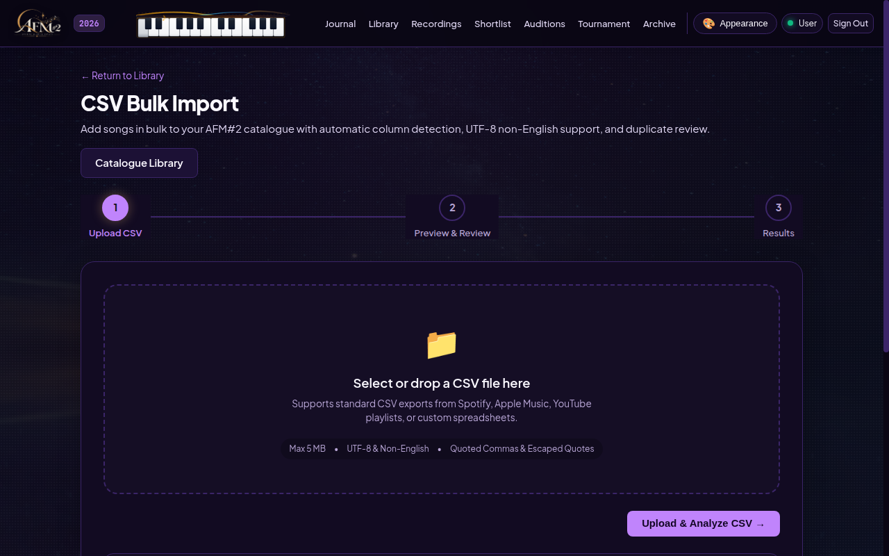
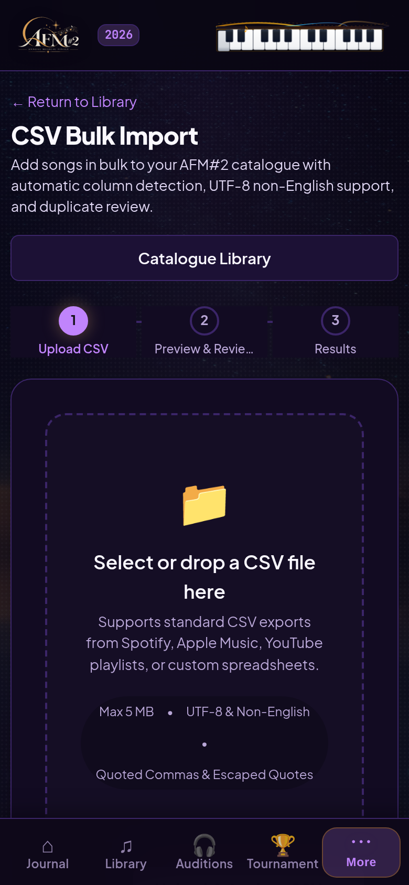
- Purpose: Ingest your exported playlist into AFM#2 with automatic header detection, UTF-8 encoding support, and duplicate screening.
- Before you begin: Confirm you have downloaded your playlist CSV file and are signed in to AFM#2.
Step-by-Step AFM#2 Import Procedure:
- In the top navigation bar, click Library.
- Near the top-right header, click the button: 📁 Import Songs.
- Stage 1: Upload CSV:
- Drag and drop your downloaded CSV file into the dotted upload box, or click the box to browse and select your file.
- AFM#2 automatically handles standard formats, UTF-8 BOM characters, non-English scripts (Japanese, Korean, Hindi, Cyrillic, Spanish), and quoted text commas.
- Click Upload & Analyze CSV →.
- Stage 2: Preview & Column Mapping:
- The analysis dashboard immediately displays six metric cards: Total Rows, Valid New Songs, Similar / Versions, Already in Catalogue, Duplicate in File, and Invalid Rows.
- Inspect the Detected Column Mapping card:
- Song Title Column: Verify that the auto-detected column matches your song names (e.g.,
Track name,Title,Song). - Artist Column: Verify that the auto-detected column matches your artist names (e.g.,
Artist name,Artist). If your CSV has no artist column, AFM#2 safely designates tracks as Unknown Artist. - If you need to change mappings, adjust the dropdowns and click Re-Analyze Mapping.
- Review Rows by Filter Tabs:
- Click through the row review tabs: All Rows, New Songs, Similar Versions, and File Duplicates.
- By default, all valid new songs and unique versions are selected with green checkboxes. Uncheck any tracks you do not wish to import.
- Select Initial Status:
- Use the Initial Status dropdown to assign an opening state:
Unreviewed(Recommended): Songs enter your Library awaiting your discovery review.Shortlisted: Songs are immediately fast-tracked into the active Formal Auditions roster.
- Execute Ingestion: Click Confirm & Ingest Selected Songs.
- Stage 3: Import Results:
- Review the final completion report detailing total songs added and duplicates skipped.
- Click Catalogue Library to return to your library and view your freshly ingested songs!
3.4 Fresh Catalogue Setup: Removing Sample Records
- Purpose: Clear out pre-populated sample songs from your account so you can start with a completely pristine, personalized music collection.
- Before you begin: Check your total library track count.
Safe Bulk Deletion Procedure:
- In the top navigation bar, click Library.
- At the top of the table, locate the Per Page dropdown selector and change it to 100 per page (Max).
- In the table header row, check the Master Select All checkbox. This selects all 100 eligible tracks visible on the current page.
- The floating Bulk Actions Bar appears at the bottom of your screen displaying:
[100] selected. - Click the red button: 🗑️ Delete.
- The Delete Songs Confirmation Modal opens:
- Review the summary stats: Selected, Eligible, and Ineligible.
- If any selected tracks are currently protected by finalized scorecards or tournament rounds, AFM#2 isolates them in the ⚠️ Ineligible Tracks list and prevents their deletion.
- Eligible tracks are listed in the ✓ Eligible Tracks preview.
- Click Confirm Deletion. The 100 eligible songs are purged immediately.
- Repeat for Remaining Batches:
- Repeat steps 3 through 7 for the remaining pages until all desired sample tracks are removed.
- Understanding Batch Calculations: The number of batches depends on your starting catalogue count. For example, a sample collection of 2,417 eligible tracks requires 25 batches (24 batches of 100 tracks, plus 1 final batch of 17 tracks).
- Verify your resulting catalogue count in the Library header.
- Proceed to Section 3.3 to import your personal music collection.
CHAPTER 4: MANAGING SONGS & MATCHING RECORDINGS
4.1 Library Navigation, Searching & Quick-Filters
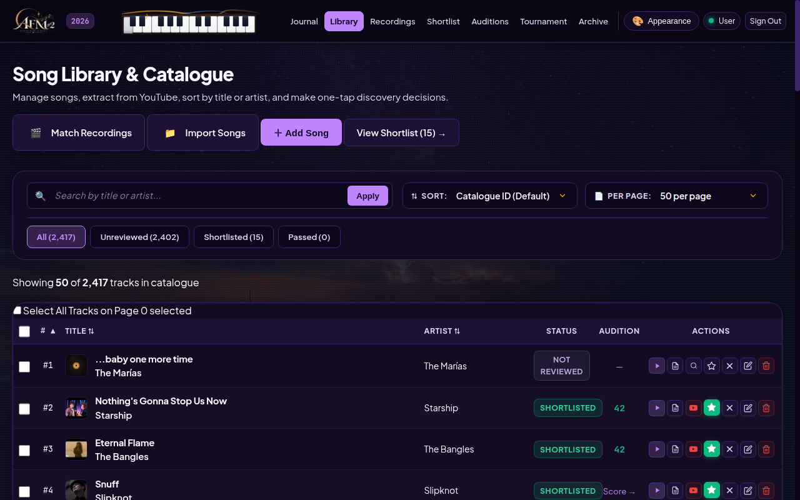
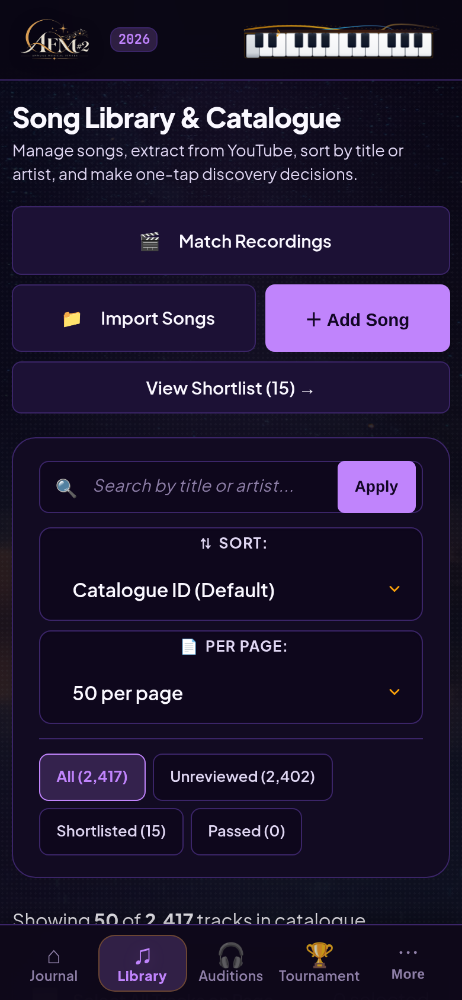
The Library serves as your comprehensive musical inventory:
- Instant Search Bar: Type any song title or artist name. Search filters in real time across your entire collection.
- Quick-Filter Pills: Rapidly isolate songs by review status:
All: Full catalogue view.Shortlisted: Contenders that have earned an audition ticket.Passed: Tracks evaluated and passed during discovery.Unreviewed: New arrivals awaiting screening.- Column Sorting: Click any column header (# ID, Song Title, Artist, Audition Score) to toggle ascending or descending sorting.
4.2 Adding Individual Songs to Your Catalogue
- Purpose: Manually introduce a single new song into your collection.
- Before you begin: Have the song title and artist name or a YouTube link ready.
Procedure:
- On the Library page, click ＋ Add Song.
- Method A — YouTube Auto-Fill (Recommended):
- Paste any YouTube or YouTube Music link (or 11-character video ID) into the input field.
- Click ⚡ Fetch Video Info.
- AFM#2 automatically queries the official video title, artist, and album thumbnail.
- Click Add Track to Catalogue.
- Method B — Manual Entry:
- Switch to the Manual Entry tab.
- Type the Song Title (Required) and Artist Name (Optional).
- Click Add Track to Catalogue.
- Expected Result: The song is catalogued immediately and given an audition status of
Unreviewed.
4.3 Editing Metadata & Single-Record Management
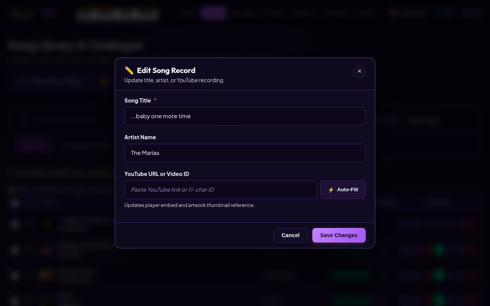
- Editing Metadata: Click the Edit (✏️) button on any song card or table row. Adjust the title, artist, or YouTube recording URL in the modal dialog, and click Save Changes.
- Deleting Single Songs: Click the Delete (🗑️) button. A confirmation preview opens displaying the song details. Click Delete Track to remove it. (Protected songs with finalized tournament history cannot be deleted).
4.4 High-Definition Playback & Synced Lyrics
- Embedded Audio Player: Click ▶ Play in AFM#2 on any song card. The custom audio player slides into view, streaming high-definition audio without ads.
- Synchronized Lyrics Drawer: Click the Lyrics (📜) button. A slide-out panel displays the complete lyrical poetry of the track, allowing you to follow verses, choruses, and bridges as you listen.
- External Listening Links: Every song card provides quick links to YouTube and Search in case you prefer listening on high-fidelity studio monitors or external hi-fi equipment.
4.5 YouTube Recording Discovery & Matching
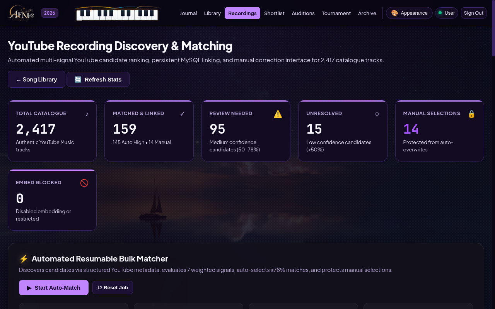
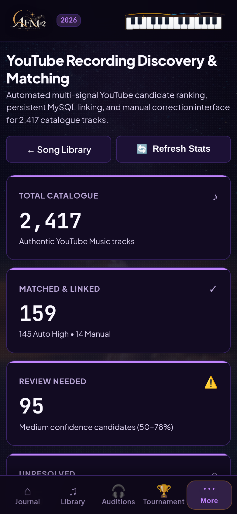
- Purpose: Automatically find, verify, and link high-fidelity YouTube audio recordings for imported catalogue songs that do not yet have playback links.
- Before you begin: Ensure you have imported songs in your Library and navigate to Recordings in the top navigation bar.
Understanding Matched vs. Unmatched Tracks:
- Matched (Green): The song has a verified YouTube video ID attached. Playback and synced lyrics work immediately across AFM#2.
- Unmatched (Amber): The song metadata exists in your catalogue, but no audio source is linked yet.
Step-by-Step Auto-Match & Candidate Review Procedure:
- Navigate to Recordings.
- At the top of the page, locate the ⚡ Automated Resumable Bulk Matcher banner.
- Click ▶ Start Auto-Match.
- AFM#2 scans YouTube for high-accuracy matches across your unmatched songs:
- The real-time progress bar tracks completed matches.
- You can click ⏸ Pause at any time, or close the page—the job is fully resumable.
- Reviewing Individual Song Candidates:
- In the recordings table, locate any song and click the ⚡ Candidate Videos button.
- The 🎯 YouTube Candidates modal opens, displaying discoverable video matches.
- Compare each candidate card: thumbnail art, exact video title, channel name, duration, and publish date.
- Click the candidate's ▶ Play button to listen and verify that it is the studio original rather than an amateur cover or noisy live recording.
- Click Select Recording to bind that video permanently to your song.
- Correcting an Incorrect Match:
- If a song was matched to the wrong version, click the 🔗 Edit Recording URL button.
- Paste the exact YouTube URL or video ID of your preferred studio recording.
- Click 🔍 Verify, review the fetched thumbnail, and click 💾 Save & Verify Link.
CHAPTER 5: DISCOVERING & SHORTLISTING CONTENDERS
5.1 The Purpose of Discovery Curation
A music catalogue may contain thousands of tracks, ranging from casual ambient sounds to holiday singles. The Discovery Shortlist acts as an essential pre-competition curation filter: it allows you to audition candidate tracks quickly and curate a tight, elite roster of contenders that deserve formal tournament adjudication.
5.2 Navigating the Shortlist Stream
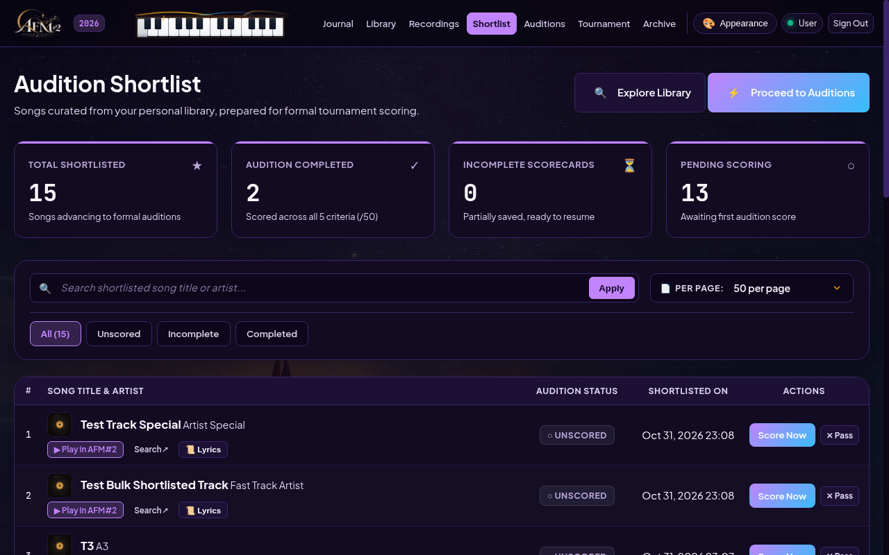
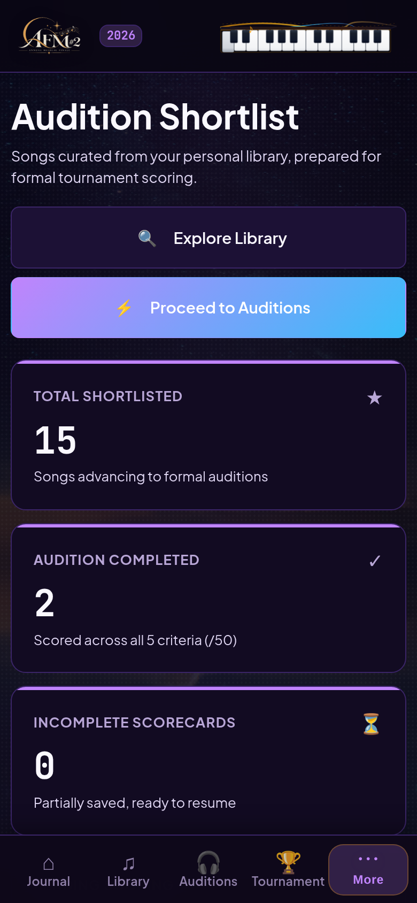
In the top navigation bar, click Shortlist:
- Songs appear as focused evaluation cards displaying the title, artist, album art, playback controls, and external search links.
- Use the status filter tabs (All, Unscored, Incomplete, Completed) to track your curation workload.
- Use the Per Page selector (25, 50, 100) to adjust your view.
5.3 Shortlisting vs. Passing Tracks
- Shortlisting a Song (⭐):
- Click Scorecard or Shortlist on a song card.
- The song is marked as an active tournament contender and promoted into the Formal Auditions hall.
- Passing a Song (✕ Pass):
- If a track does not have championship caliber, click ✕ Pass.
- The song is gracefully moved out of the active competition stream.
- Crucial Distinction: Passed vs. Deleted:
- Passing a song does not delete it from your Library. The track remains safely stored in your catalogue for everyday listening, but it will not appear in the tournament brackets.
- Deleting a song completely purges it from your account database.
5.4 Understanding Review Statuses
In the Discovery stream, each song displays an explicit status pill:
UNSCORED(Neutral): The track is shortlisted for auditions, but no criteria scores have been entered yet.INCOMPLETE(Amber): You have begun scoring the track (1 to 4 criteria filled), but the scorecard is not yet complete.✓ SCORED: XX / 50(Green): All five criteria have been evaluated, yielding a complete aggregate total.🔒 SCORE LOCKED(Cyan): The scorecard has been reviewed and permanently finalized.
CHAPTER 6: CONDUCTING FORMAL AUDITIONS
6.1 The Audition Arena & Scorecard Structure
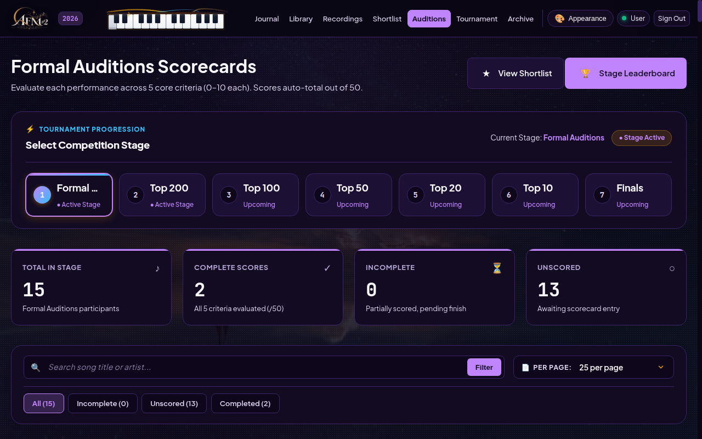
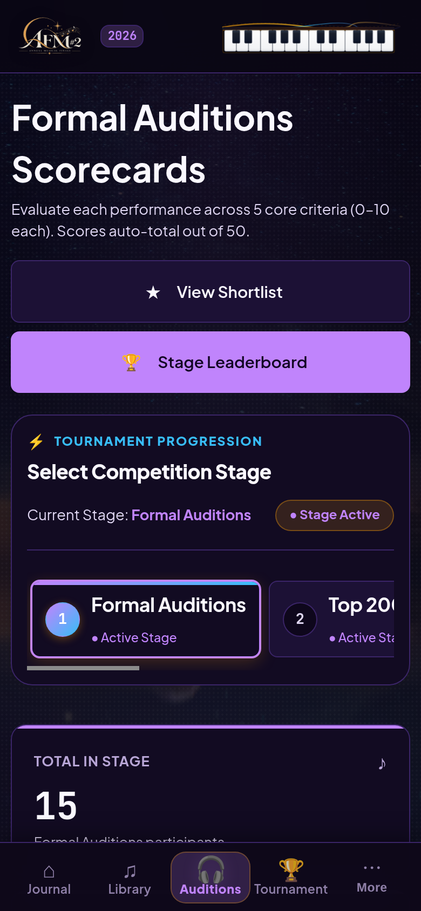
In the top navigation bar, click Auditions. The Audition Arena is where critical adjudication takes place. Every shortlisted contender is presented with an individual, tactile scorecard matrix:
- Top Row: Album art, track title, artist name, and live playback trigger.
- Middle Matrix: Five vertical criterion cards, each displaying an iconic symbol, criterion label, score readout, and tactile input instruments.
- Right Instrument: Real-time aggregate score counter displaying your total out of 50.
- Bottom Controls: Expandable Notes & Reflections drawer, Reset button, and the Finalize Scorecard (🔒) lock action.
6.2 The Five Core Evaluation Criteria
Rather than relying on vague star ratings, AFM#2 evaluates every composition across five independent dimensions, each scored on a strict integer scale from 0 to 10:
| Criterion | Icon | Evaluation Dimension | Guiding Adjudication Questions |
|---|---|---|---|
| Melody | ♫ | Harmonic Architecture & Hooks | Does the melodic line grip your attention? Are the chord changes inventive? Does the hook linger in your memory hours later? |
| Lyrics | 📝 | Poetic Resonance & Storytelling | Does the writing convey genuine narrative depth? Is the imagery evocative? Do the rhymes feel authentic rather than forced? |
| Vocals | 🎤 | Phrasing, Timbre & Delivery | Does the vocalist convey believable conviction? Is the pitch, control, and emotive phrasing expressive and compelling? |
| Emotion | ❤️ | Visceral Impact & Goosebumps | How intensely does the track move you? Does it produce chills, emotional catharsis, kinetic joy, or deep nostalgia? |
| Replayability | 🔁 | Longevity & Staying Power | Can you listen to this song five times consecutively without ear fatigue? Will you still revere this track five years from now? |
6.3 Three Tactile Scoring Modalities
AFM#2 provides three comfortable ways to enter scores on desktop, tablet, and mobile:
- Tactile Increment Steppers (➕ / ➖): Tap the
+or-buttons to adjust scores in precise single-point increments. Ideal for one-handed mobile scoring. - Precision Horizontal Sliders: Click and drag the smooth slider bar to sweep from 0 to 10. Perfect for mouse and trackpad control.
- Direct Numeric Typing: Click directly into the numeric score box, type any integer from
0to10, and pressTabto advance to the next criterion.
6.4 Personal Reflections & Listening Notes
Below the criteria cards, click Notes & Reflections to open your private listening diary. Capture what made a guitar solo breathtaking, how a lyric resonated with a personal memory, or why a vocal bridge stood out. Your notes are saved alongside your score and remain accessible throughout the tournament and archive.
6.5 Incomplete vs. Complete Scorecards
- Incomplete (1–4 Criteria Scored): The aggregate indicator displays
— / 50with an amberIncompletebadge. The song cannot be finalized until all five criteria are recorded. - Complete (All 5 Criteria Scored): The aggregate score computes instantly (e.g.,
44 / 50) and the badge switches to green:✓ Complete. - Resetting an Unfinalized Draft: If you change your mind during scoring before locking, click ↺ Reset Scorecard. All five criteria return to blank (
— / 50).
6.6 Scorecard Finalization & The Permanent Lock Safeguard
When all five criteria are evaluated, the lock action unlocks:
- Purpose: Commit your evaluation permanently to the tournament ledger and submit your scores to the live leaderboard.
- Before you begin: Review all five criteria scores and verify that your notes are complete.
Step-by-Step Finalization Procedure:
- Carefully review your numbers: Melody, Lyrics, Vocals, Emotion, and Replayability.
- Confirm that your aggregate score accurately reflects your musical opinion.
- Click the button: Finalize Scorecard (🔒).
- The safeguard engages immediately:
- Status changes to 🔒 Score Locked.
- All input steppers, sliders, and text fields transition to an immutable, read-only state.
- The lock indicator displays the tooltip: "Finalized scorecard".
- The song is officially eligible for tournament advancement!
CHAPTER 7: MANAGING TOURNAMENT PROGRESSION
7.1 The Seven Tournament Stages Ladder
The competition progresses through seven rigorous elimination brackets:
```
Stage 1: Formal Auditions --> All Shortlisted Contenders Auditioned (/50)
Stage 2: Top 200 --> Target Field: Exactly 200 Contenders
Stage 3: Top 100 --> Target Field: Exactly 100 Contenders
Stage 4: Top 50 --> Target Field: Exactly 50 Semifinalists
Stage 5: Top 20 --> Target Field: Exactly 20 Finalists
Stage 6: Top 10 --> Target Field: Exactly 10 Elite Showcase Contenders
Stage 7: Grand Finale --> The Definitive Champion of 2026 Crowned
```
7.2 Scoring, Finalizing, and Advancing: Crucial Distinctions
To steer the tournament effectively, you must understand three separate concepts:
- Scoring a Song: Entering numeric values (0–10) across criteria. This is an active work-in-progress draft.
- Finalizing a Scorecard: Locking the five scores permanently with the 🔒 safeguard. Only songs with finalized scorecards can qualify for tournament advancement.
- Advancing a Stage: Launching the guided Qualification Wizard on the Tournament page to promote the highest-scoring finalized contenders into the next round.
7.3 Understanding Qualification Cutoffs & Target Quotas
On the Tournament page, contenders are ranked in descending order by aggregate score. The leaderboard displays an unmistakable visual divider:
⚡ TARGET CUTOFF LINE — TOP XX ADVANCE TO [NEXT STAGE]
- Zone Qualifiers (Green Glow): Contenders ranking above the cutoff line are qualified to advance.
- Zone Eliminated (Muted): Contenders ranking below the cutoff line exit the championship hunt.
- Cutoff Score: The aggregate score of the contender occupying the final qualifying position.
7.4 The Qualification Wizard: Step-by-Step
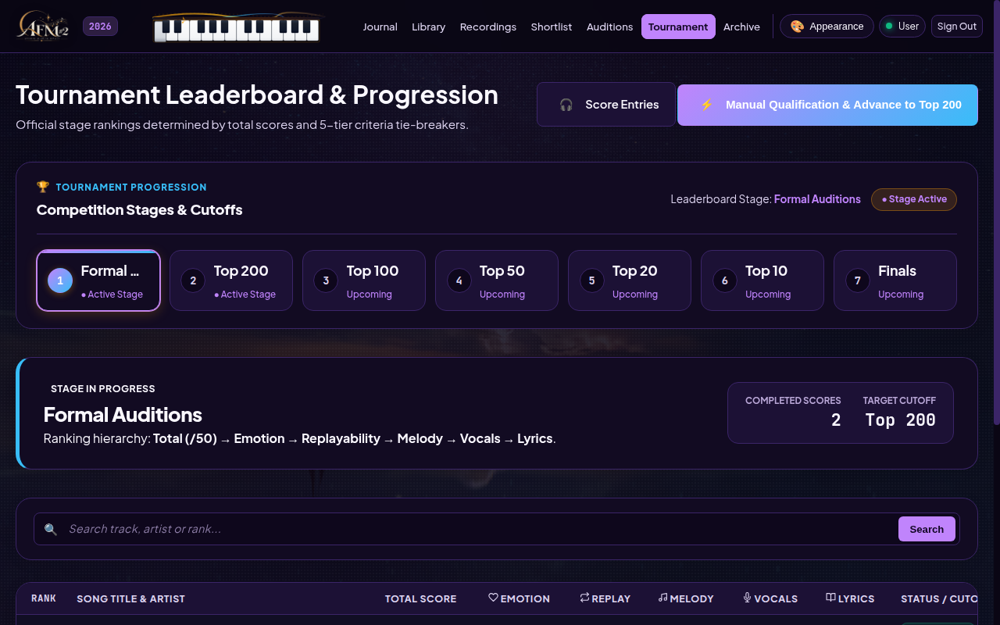
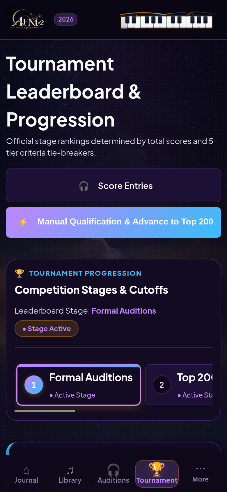
- Purpose: Advance the tournament into the next round by validating qualifiers, resolving ties, and locking the completed stage.
- Before you begin: Ensure all contenders in the current stage have completed, finalized scorecards.
Step-by-Step Stage Advancement Procedure:
- In the top navigation bar, click Tournament.
- Select the currently active stage from the stage navigation pills.
- Click the primary button: ⚡ Manual Qualification & Advance to [Next Stage].
- The Qualification Wizard opens in a modal window:
- Step 1: Automatic Qualifiers: Inspect the list of tracks whose scores clearly exceed the qualification threshold.
- Step 2: Boundary Contenders & Ties: Review any tracks that land directly on the qualification threshold line. If more tracks share the cutoff score than remaining quota slots, inspect the tie-breaker resolution.
- Step 3: Confirmation Summary: Review the final roster count and verify that the advancing field matches the target quota (e.g., exactly 50 songs for Top 50).
- Click Confirm & Advance Tournament.
- Progression Outcome: The completed stage is permanently archived, the new round is activated, and your leaderboard updates immediately!
7.5 Precision Tie-Breaking Hierarchy
When multiple contenders share the exact same aggregate score at the qualification cutoff boundary (for example, four songs tied for the final two slots in the Top 20), AFM#2 invokes the official tie-breaking hierarchy:
- Tie-Breaker 1: Emotion (❤️) — The song with the higher visceral emotional score prevails.
- Tie-Breaker 2: Replayability (🔁) — The song with the greater replay longevity prevails.
- Tie-Breaker 3: Melody (♫) — The song with the stronger harmonic architecture prevails.
- Tie-Breaker 4: Vocals (🎤) — The song with the superior vocal performance prevails.
- Tie-Breaker 5: Lyrics (📝) — The song with the higher lyrical resonance prevails.
- Tie-Breaker 6: Adjudicator Choice — If contenders remain tied across all five criteria, the Wizard displays an amber boundary alert, prompting you to make a deliberate adjudicator selection before advancing.
7.6 The Grand Finale & Crowning the Champion
When you advance to Stage 7 (The Grand Finale), the elite finalists battle for the crown. The song achieving the highest aggregate score claims the ultimate title: The 2026 Annual Musical Finale Champion. The runner-up claims Silver 🥈, and third place claims Bronze 🥉.
CHAPTER 8: EXPLORING RESULTS & THE PERMANENT ARCHIVE
8.1 The 2026 Championship Podium
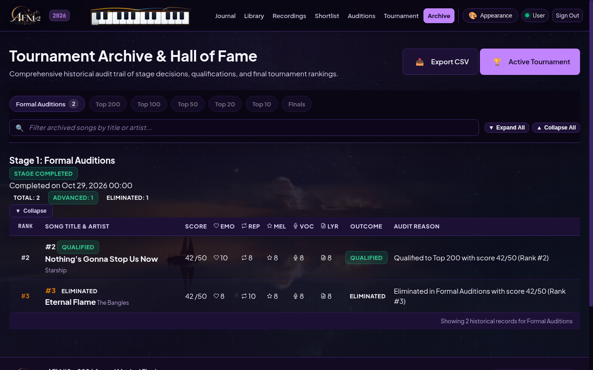
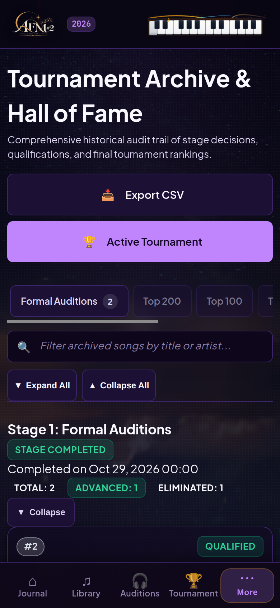
In the top navigation bar, click Archive. At the summit of the archive rests the 2026 Championship Podium:
- 🥇 Gold / Champion (Center): Elevated golden pedestal featuring the Golden Wreath, Champion Banner, artist details, and final aggregate score.
- 🥈 Silver / Runner-Up (Left): Second-place pedestal with silver laurels and score breakdown.
- 🥉 Bronze / Third Place (Right): Third-place pedestal with bronze medal honours.
8.2 Stage-by-Stage Historical Audit Trails
Below the podium, the Archive provides complete historical records for every completed round:
- Click any stage pill (Top 200, Top 100, Top 50, Top 20, Top 10) to inspect the final standings of that round.
- View the exact cutoff score that determined elimination in each historic bracket.
8.3 Reviewing Full Multi-Criteria Score Breakdowns
Click any song row in the Archive to expand its comprehensive adjudication dossier:
- View exact scores across all five criteria (Melody, Lyrics, Vocals, Emotion, Replayability).
- Read your personal reflections and listening notes recorded at the moment of evaluation.
- Inspect the timestamp when the scorecard was finalized.
8.4 Exporting the Official Tournament Ledger (CSV)
- Purpose: Download an offline spreadsheet backup containing your complete tournament results, scores, notes, and rankings.
- Procedure: On the Archive page, click 📥 Export Ledger to CSV. Your browser downloads a complete CSV file containing every evaluated track, criteria breakdown, and tournament placement.
CHAPTER 9: PERSONALIZING YOUR EXPERIENCE
9.1 Visual Themes & Atmospheric Depth Controls
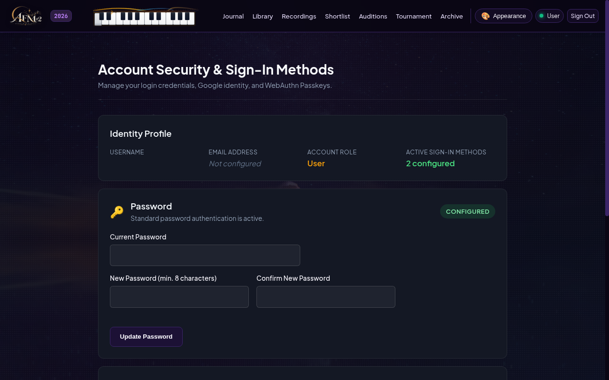
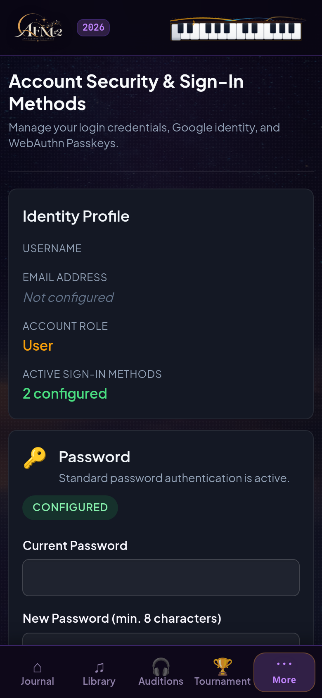
- Switching Themes: Click Appearance (🎨) in the top navigation bar. Select any of the eight curated visual themes. The entire color palette updates instantly without reloading the page.
- Atmospheric Depth & Blur: Use the slider in the Appearance modal to adjust background blur intensity and ambient glow, creating the perfect mood for your listening environment.
9.2 Account Profile & Credential Management
Click your User Pill in the top navigation bar to open your Account settings:
- Update your display name and email address.
- Change your account password securely by entering your current password and choosing a new one.
9.3 Passwordless Biometric Passkeys (WebAuthn)
- Purpose: Enable instant, ultra-secure sign-in using Touch ID, Face ID, Windows Hello, or hardware security keys without typing a password.
- Before you begin: Ensure you are signed in on a device equipped with biometric authentication.
Registration Procedure:
- Navigate to Account.
- Scroll to the Biometric Passkeys (WebAuthn) section.
- Click ＋ Register New Passkey.
- When prompted by your browser or operating system, scan your fingerprint (Touch ID), present your face (Face ID), or touch your security key.
- Provide a memorable label (e.g., "MacBook Pro Touch ID" or "iPhone Face ID").
- Click Save Passkey.
- Result: You can now sign in to AFM#2 with a single biometric touch!
9.4 Multi-Device Synchronization
All your catalogue records, scorecards, personal reflections, and tournament states are safely synchronized in the cloud. You can curate songs on your desktop at work, audition them on your tablet with headphones in the evening, and check tournament standings on your phone on the go.
CHAPTER 10: TROUBLESHOOTING & FREQUENTLY ASKED QUESTIONS
10.1 Practical Troubleshooting Guide
Issue: CSV Import Fails or Reports Unrecognized Columns
- Cause: The CSV column headers do not match standard title or artist keywords.
- Solution: In Stage 2 of the import wizard, locate the Detected Column Mapping card. Manually select your song title column in the Song Title Column dropdown and click Re-Analyze Mapping.
Issue: Audio Playback Reports "Video Unavailable" or "Playback Restricted"
- Cause: Certain record labels restrict YouTube playback inside third-party embedded players.
- Solution: Click the YouTube or Search button on the song card to play the song in external high-definition audio, then return to AFM#2 to record your scores. Alternatively, click the 🔗 Edit Recording URL button in Recordings to link an alternative official upload.
Issue: Synchronized Lyrics Are Not Displaying
- Cause: Obscure indie releases or brand-new singles may not have publicly indexed lyrics.
- Solution: Click the Search link on the song card to locate the lyrics on Genius or AZLyrics. You can paste important lyric lines into your Notes & Reflections box for permanent reference.
Issue: Biometric Passkey Prompt Does Not Appear
- Cause: Your browser or operating system does not support WebAuthn, or browser permissions are blocked.
- Solution: Ensure you are using an updated version of Chrome, Safari, Edge, or Firefox. If passkeys are unavailable on your current device, you can always sign in using your standard username and password.
10.2 Frequently Asked Questions (FAQ)
Q1: Can I change my scores after clicking Finalize?
Answer: No. Scorecard finalization is an intentional one-way integrity safeguard designed to eliminate hindsight bias. Take your time during the audition phase. Ensure you are completely satisfied with your ratings before clicking Finalize.
Q2: What happens if I pass a song in Discovery? Can I retrieve it later?
Answer: Yes. Passing a song does not delete it from your Library. In the Library, click the Passed filter pill to review passed songs. You can click Shortlist on any passed track at any time to return it to the active audition roster.
Q3: Does deleting a song from my catalogue erase its tournament history?
Answer: No, because AFM#2 strictly prevents the deletion of any track that has a finalized scorecard or official tournament history. Protected tracks cannot be deleted through bulk or single-record actions.
Q4: Are other participants able to see my scores or personal reflection notes?
Answer: No. Your scores, criteria evaluations, listening reflections, and tournament progression belong strictly to your private participant profile.
Q5: How should I pace my audition listening sessions?
Answer: We recommend adjudicating in batches of 5 to 10 songs per listening session. Ear fatigue and sensory adaptation diminish emotional perception. Take short breaks between intense listening rounds, hydrate, and use good quality headphones or studio monitors.
Q6: Can I listen to songs using my own streaming app?
Answer: Yes. Every contender card includes direct links to YouTube and YouTube Music. You can listen on your preferred hi-fi setup, external stereo system, or streaming device, and return to AFM#2 to log your scores.
10.3 Adjudication Fair Play & Integrity Standards
As an invited participant, you uphold the artistic integrity of the Annual Musical Finale:
- Listen to Complete Compositions: Avoid judging tracks based solely on the opening thirty seconds. Great songwriting often unfolds across subtle bridges and dynamic codas.
- Evaluate Independent Dimensions: A song with poor lyrics may feature breathtaking melodic craft; a song with raw, unpolished vocals may possess profound emotional resonance. Score each of the five criteria honestly on its own merits.
- Respect the Finalization Lock: Embrace the permanence of your finalized scorecards as an authentic historical document of your musical year.
Welcome to the Annual Musical Finale 2026. Enjoy your listening journey!